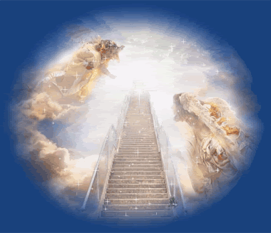
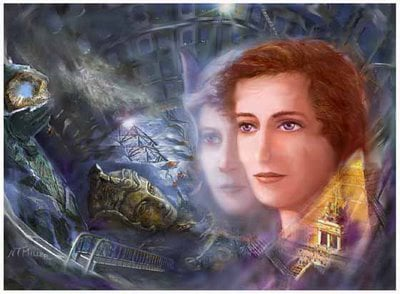
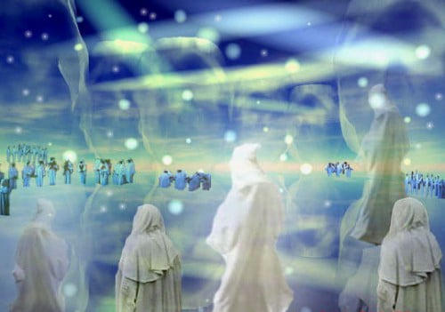
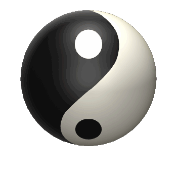

Preporuka za ovaj jedinstveni uređaj za zaštitu od tehničkih i drugih zračenja.
(Uređaj preporučuje i Spasoje Vlajić)

Reinkarnacija ili ponovno rođenje definitivno postoji.U suprotnom sav život na zemlji bi bio potpuno besmislen.Nešto sam o ovome već spomenu u uvodnom delu.Znate stav današnje crkve,"jednom se živi i onda idete na nebo gde spavate ,a onda na osnovu vaših dela vam se posle spavanja na nebu sudi na strašnom sudu,i nakon toga ako ste radili po pravilima velikog brata na zemlji onda ćete dobiti večni život".I ovim crkva indirektno dolazi sama sa sobom u konflikt jer kaže da ne postoji reinkarnacija ali kaže da ćete jednom ponovo živeti i to večno što znači da ipak priznaje da postoji bar jedna reinkarnacija.Bilo bi dobro da se konačno odluče mada to meni ništa neće značiti.Zamislite malo dete koje odmah umre od neke bolesti,i njemu će po toj logici neko da sudi i da ide u raj ili pakao.A istovremeno vas plaše sa bogom kao nečim strašnim,morate stalno da živite u strahu od svega toga.Nadam se da shvatate iz koje kuhinje ide cela ova priča.Opet s druge strane i sama crkva je pre oko hiljadu godina priznavala da reinkarnacija postoji,pa je to kasnije brisano.Neki upućeniji sveštenici kažu da je to zato što bi ljudi kada bi znali da reinkarnacija postoji vršili česta samoubistva,očekujući da će u sledećem životu biti bolje.Ovo je već malo bolje opravdanje,ali kada bi se tim istim ljudima do kraja objasnilo da ih onda čeka duplo teži sledeći život ja mislim da to ne bi niko radio.Tako da ipak to nije opravdanje.Brojni su slučajevi ljudi širom sveta koju su doživeli kliničku smrt i vratili se u telo i sećali se svega šta se dešavalo oko njih i to sve prepričali.Mislim da ne treba da imate sumnje da to postoji.Ja se neću toliko baviti dokazivanjem već objašnjenjima samog procesa.

Nakon smrti duh napušta telo,mnogi prisustvuju sopstvenoj sahrani.Obično u početku u zavisnosti od verovanja osobe ona može da luta jedno vreme po svim mestima na kojima je bila za života ili obilazi rođake i tu može dosta da se zadrži(zavisi koliko je vezana za njih),a zavisi i od tih rođaka koliko su bili vezani za osobu koja je umrla mogu dosta da je zadržavaju u ovoj fazi.Neke osobe koje su bile dosta negativne za života i neveruju ne u Boga nego ni u šta što nije opipljivo, mogu da se nađu i u problemu sa demonskim silama koje ih malo isprovociraju i što se kaže propuste kroz šake na 4d nivou kroz koji se mora proći.Konačno kada se malo osveste otvara se svetlosni tunel(gledali ste u raznim filmovima) koji zapravo predstavlja prelaz u više dimenzije(u crkvi ovo zovu nebeski raj).Za vreme između reinkarnacija,osoba se nalazi obično ne jednoj dimenziji iznad ove sadašnje mada kada je u pitanju zemlja onda je to u većini slučajeva 5.dimenzija.To je potrebno jer iz više dimenzije možete lakše da sagledate svoj prethodni život kao i buduće.Obično vas dočeka neko od rođaka ali tu su i anđeli ili duhovni vodiči,koji vas dalje sprovode do tzv. Duhovnog veća staraca.Oni su slično obučeni kao neke sudije na zapadu ,pa je neko napravio zamenu teza po starom dobrom običaju i ovo proglasio za taj strašni sud.Tu nema nikakvog suđenja nego sagledavanja vašeg poslednjeg života.Tamo postoji sve zapisano što ste uradili za života,kao i svaka vaša misao i pomisao,i donose se odgovarajući zaključci na čemu treba da radite ubuduće i u čemu da se usavršavate da biste uklonili mane koje imate.Nemojte me pogrešno razumeti ali oni vas neće pitati da li ste uspeli da zaradite ovoliko ili onoliko para nego recimo da li ste pomogli nekome,šta ste postigli u duhovnom razvoju od onoga što je bilo planirano,šta ste sve loše uradili a šta dobro i slično.Ono što na prvi pogled mislite da je dobro,obično nije.Ako mislite pa ja sam imao uspešan život na zemlji ,radio sam sve kako veliki brat kaže nema šta da brinem,obično to i jeste problem.Inače ova tema je jako opširna pa navodim jako skraćene verzije.Ako se pitate koliko sve to preispitivanje između reinkarnacija traje nemate razloga za brigu, tamo vreme ne postoji.Period između reinkarnacija zavisi od nivoa svesti pojedine osobe i dimenzije u kojoj je živeo.Na zemlji dok se jedna osoba ne reinkarnira prođe u proseku oko 150 godina.Na višim nivoima postojanja ono je sve kraće ali kažem zavisi i od osobe,kao i kada je umrla.Ako je umrla odmah,kao malo dete,nema potreba za dugom pripremom može već za godinu dana da se reinkarnira jer to je već sve dogovoreno,treba samo malo da je podsete.Inače dok ste između reinkarnacija,odnosno u tom duhovnom svetu ceo vaš život je zabeležen kao na nekom filmu i to mogu da vam puštaju koji god deo života hoćete po više puta, dogod ne sagledate sve greške i gluposti koje ste pravili.

Nakon toga dobijate određene zadatke kojima ćete se baviti na onom svetu a koje će vam pomoći da se pripremite za novi život.Kažu da se ova dimenzija postojanja između reinkarnacija nalazi negde na pola puta do Meseca,imate sve kao i na Zemlji s tim da sve što poželite imate odmah,a ako nećete to bledi i nestaje,kuća,kola,bilo šta.Ovo je ono što neki nazivaju raj na nebu,a taj raj izgleda onako kako ga doživljavate i zamišljate.U tom svetu srešćete mnoge svoje rođake,čak i one koje niste poznavali ali oni vas znaju.Ima jedan broj duša koje drugačije zamišljaju raj odnosno oni sebe vide u paklu i postoji jedna posebna stvarnost i za njih pogotovo ako su uporni sa takvim razmišljanjima i to je ono što se zove nebeski pakao.Tamo mogu u procesu između reinkarnacija dosta da se zadrže,najviše zavisi od njih samih.Dobar deo priče o temi reinkarnacija možete odgledati u narednim filmovima:"What Dreams May Come" ,a drugi je dokumentarac "5.dimenzija".
Igrani Film "What Dreams May Come" stvarno dobro prikazuje neke faze ali je i mnogo toga preskočeno iako film traje dosta dugo(mogli su baš još malo da ubace).Dokumentarac je isto sasvim solidan ali prava priča je mnogo duža.
Raj i pakao je znači više vaš doživljaj,potreba i stanje svesti nego nešto treće.Mada sa druge strane negativne osobe,kriminalci,političari,ubice,lažni sveštenici koji su radili sve suprotno od onoga što je trebalo obavezno prolaze prvo kroz pakao i obično se tamo dugo zadrže.Prednost toga raja na nebu je i što nemate bolesti jer nemate fizičko telo ali ako umišljate da vas nešto boli stvarno ćete imati taj doživljaj.Ono što je možda najzanimljivije je da mnogi koji su doživeli kliničku smrt i sećaju se života na onoj strani,kažu da je osećaj bio neverovatno pozitivan i da je sve to,kosmos ispunjen nekom neverovatno pozitivnom energijom,tako da čovek tamo može stvarno da živi u velikoj sreći.I ima tih ljudi koji su se vraćali u telo i sećali svega,a kasnije pokušavali samoubistva da bi što pre otišli u taj bolji svet i osećaj.Između ostalih i Nikola Tesla je znao za sve ovo i ideja mu je bila da ovaj nebeski raj spusti na zemlju,međutim kasnije je odustao jer je shvatio da nije još čovečanstvo sazrelo za to.Ali u današnje vreme sve smo bliži momentu kada će i carstvo nebesko biti na zemlji.Gde ćete boraviti tačno dok ste u toj 5. dimenziji odlučuje to veće staraca na osnovu vašeg nivoa napredovanja za života.Nije ni tamo sve isto možete biti na tom da kažem nultom nivou gde baš i neće biti neki poseban raj ili ako ste baš puno napredni onda sedmo nebo.za to ste sigurno čuli,kada neko kaže "on je sada na sedmom nebu" Tamo je baš pravi raj.Tu provodite period između 2 života.I na kraju kada ste prošli sve faze pripreme za novi život, birate telo gde ćete se roditi i pod kakvim okolnostima.Ovo je možda i najvažniji deo.Imate nekoliko opcija obično oko 3,tu su u okruženju koje vas čeka razni rođaci iz prethodnih života.Detaljno se analizira vaš budući život naročito do 20. godine,nešto se ostavlja i kao iznenađenje,vi pristajete na kraju na to kada shvatite da vam to sleduje u odnosu na to kakva vam je karma(o tome ću posebno),i onda gubite izgled ,prelazite u bezobiličnu masu,i rađate se na zemlji u telu.Deca obično plaču jer se duša seća onoga gore i ovoga dole i buni se a i zna šta je čeka.Zemlja je često pakao.

Karma prestavlja jedan energetski zapis ili trag na duši koji nosite sa sobom kroz živote.Karma funkcioniše po principu akcije i reakcije,ili uzroka i posledice,što znači ako ste radili loša dela za života biće loša karma i to će te odrađivati u narednim životima.Ukoliko je velika ova negativna karma nekada se može rasporediti i u više života,ali ima i osoba koje hoće brzo da je odrade pa recimo odu na zemlju da ga upucaju ili da robija u zatvoru ili takve stvari.Ova priča o karmi je jako bitna i nije uopšte naivna i neće se tako lako moći shvatiti ali ja ću pokušati u najkraćem da vam dočaram.Ako radite dobra dela za života karma će biti pozitivna,to može delimično da vam neutrališe onu negativnu već za života ili recimo ako ste uradili nešto jako loše za života i odmah bili osuđeni i robijali za to,možda ste je već odradili na samoj zemlji.Što više vremena protekne do momenta do kada ćete početi da je odrađujete ide vam i tzv. Karmička kamata ,tako da što duže izbegavate da se suočite sa posledicama ,moraćete više da se posle mučite.Karma je deo zakona kosmosa ali u okviru našeg podprograma matrice 3d realnosti sveta u kome živimo.Karma je prvobitno zamišljena da je odradite kompletno za vreme istog života,ali tada je čovek živeo 2000 godina,a kada je došlo do skraćenja na 70ak godina ona se prenosi kroz generacije.Karma može da se prenosi i na rođake,decu(ako oni to pihvate),a neki put i moraju jer su postojala različita karmička umrežavanja u prethodnim životima.Recimo sadašnja devojka vam je Majka iz prošlog života,koja vam recimo postane i žena i tu se razračunavaju i poravnavaju računi iz prethodnog života na različite načine.Ne znam koliko kapirate sve ovo,ja sam već maksimalno pojednostavio.U prošlosti sile zla na zemlji a to rade i danas, su našli načine da zamrznu karmu i to da natovare ljudima,pa da oni odrađuju za njih.To su jako opasne igre,u prošlosti to su bili neki rituali kojih sigurno ima i danas ali se čuvajte u današnje vreme raznih obilazaka specijalno proglašenih znamenitosti,turističkih atrakcija.Osim ove lične karme postoje i državna i zemaljska karma o kojoj sada ne bih dužio,za početak i ovo ako ste razumeli dobro je. Inače ove negativne sile koje drugima tovare karmu će uskoro morati da polože račune jer to ne može u nedogled da se radi,ipak Bog će reći poslednju.

Ovde možete napraviti manju ili veću kupovinu onoga što je na stranici knjige ,kontakt i porudžbine objašnjeno.Znači moguće su 2 vrste porudžbine :
1.Manja kupovina se tretira više kao donacija ali za uzvrat ipak dobijate jednu vrlo zanimljivu knjigu u pdf-u o Nikoli Tesli koja će vas oduševiti,spada u raritete i malo se zna o ovome.Vrlo poučna stvar.
2.Veća kupovina podrazumeva kompletan detaljan materijal o ovim temema sa sajta koji je objašnjen na stranici knjige ,kontakt i porudžbine i ima oko 50gb i nakon poručivanja možete preuzeti preko linka ili za one u Srbiji može i pouzećem.Za one koji plaćaju preko linka ispod, izaberite opciju 60 evra.To se podrazumeva da je ova porudžbina.Oni koji hoće pouzećem neka me kontaktiraju.
Prilikom procedure kupovine uloliko ste za manju kupovinu ili donaciju možete izabrati jedan od već ponuđenih iznosa ili jednostavno u polje gde piše iznos vi upišite svoj iznos po želji,a za veću porudžbinu kao što rekoh birate 60 evra opciju.Nakon završenog plaćanja bićete kontaktirani preko emaila u roku 24 časa i dobićete ili link za preuzimanje ako je veća porudžbina ili knjigu na email ako je manja.
Preporuka za ovaj jedinstveni uređaj za zaštitu od tehničkih i drugih zračenja.
(Uređaj preporučuje i Spasoje Vlajić)

Offline Website Creator